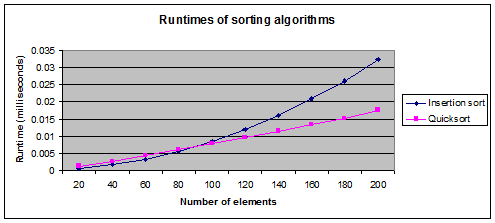
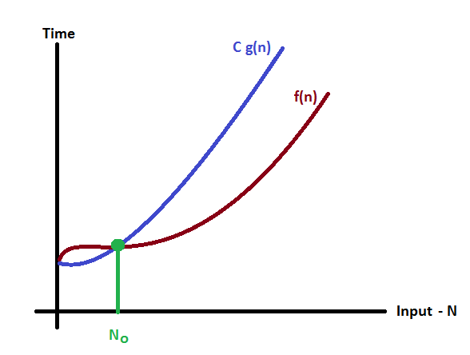
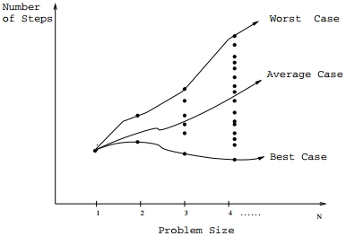
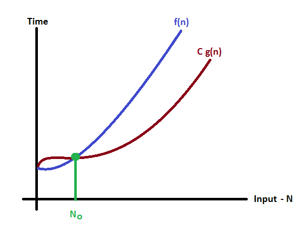
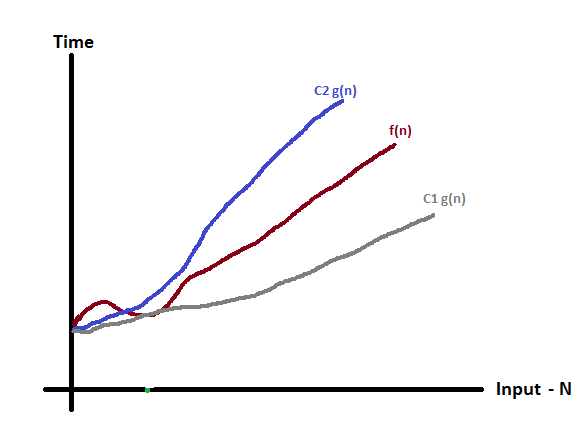

Runtime analysis

Insertion sort is O(n2). Quicksort is O(n log n).
An algorithm may be fast for small inputs but slow for large inputs, so we want to know the runtime as a function of the input size.
Input size is often measured by the number of items in the input, but if the items can be large (e.g. BigIntegers), we may want to measure input size by number of bits.
We can analyze runtime by running the program with different input sizes and timing it (sample Timer code) (C++ version).
However, sometimes we would like to analyze an algorithm's runtime theoretically, before implementating it.
Big O notation
Calculating the exact runtime of an algorithm is difficult, because it depends on the machine, the programming language, and the implementation of the algorithm.Instead of calculating the exact runtime or number of operations, we can estimate the runtime using big O notaton, which ignores constant factors.
We associate with each algorithm a function f(n), which is the number of operations performed for input size n.
We say that f(n) is O(g(n)) if for some positive constants c and n0,
f(n) ≤ cg(n)
for all n ≥ n0

f(n) is O(g(n)). Source: btechsmartclass.com
For example, if an algorithm's runtime is O(n), then the runtime is ≤ c * n for all sufficiently large n.
We can also use big O notation to describe how much space an algorithm uses.
Sometimes space is described in terms of extra space (not including the space used by the input).
Example
3n2 + 100n is O(n2).
A simple way to find the big O is by looking at the largest exponent. As n becomes large, the 100n becomes insignificant.
Analyzing code
Basic operations such as comparison or arithmetic take constant time.A loop that repeats n times, with a constant number of operations per loop, takes O(n) time.
A nested loop where each loop repeats n times takes O(n2) time.
A loop that repeatedly halves n takes O(logn) time.
Common runtimes
Below are some common runtimes, expressed using big O notation.Runtime Name Example algorithm
O(1) Constant time Access an array element by index
O(log n) Logarithmic time Binary search
O(n) Linear time Finding the min of an unsorted array
O(n log n) Mergesort
O(n2) Quadratic time Insertion sort
O(nc) Polynomial time
(c is a constant)

Best, average, and worst case runtime. Source: Skiena p. 33
Best/average/worst case
An algorithm may be faster on some inputs than others. Usually we consider either the worst-case runtime or the average-case runtime. The worst-case runtime is the maximum runtime for any input of each size. The average-case runtime is the average runtime for all possible inputs of each size. The best-case runtime is the minimum runtime for any input of each size.Big O, Big Omega (Ω), Big Theta (Θ)
We use big O to give an upper bound on the runtime. Similarly, we can use Big Omega to give a lower bound on the runtime, or Big Theta to give both an upper bound and a lower bound.We say that f(n) is Ω(g(n)) if for some positive constants c and n0,
cg(n) ≤ f(n)
for all n ≥ n0
We say that f(n) is Θ(g(n)) if for some positive constants c1, c2, and n0,
c1g(n) ≤ f(n) ≤ c2g(n)
for all n ≥ n0

f(n) is Ω(g(n)). Source: btechsmartclass.com

f(n) is Θ(g(n)). Source: btechsmartclass.com
A few useful rules
- Largest exponent rule: If ak > 0, then aknk + ak-1nk-1 + ... + a1n + a0 is Θ(nk).
(the a's and k's are constants) - Addition rule: If f(n) is O(g(n)) and h(n) is O(i(n)), then f(n) + h(n) is O(g(n) + i(n)).
- Multiplication rule: If f(n) is O(g(n)) and h(n) is O(i(n)), then f(n)h(n) is O(g(n)i(n)).
- For any constant k > 0, nk increases at a faster rate than logn.
In other words, logn is O(nk), but nk is not O(logn).